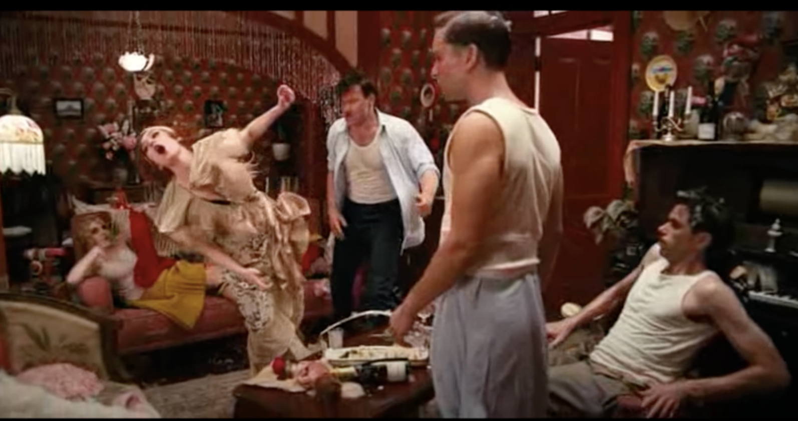

No.1 Reading Schedule
No.2 Why Read The Great Gatsby?
Like Leonardo DiCaprio,
I thought The Great Gatsby was just a love story when I first read it. Although I was too young to appreciate the great American novel fully, I felt indescribable sorrow after reading it. Years later, after watching the movie, The Great Gatsby took on a different meaning for me too, and I realized that my sorrow was not only for Gatsby's tragedy but also for the failed American dream. So, I decided to reread the book because it is such a classic novel. The book's greatness is in what's left unsaid by Fitzgerald, and the interpretation only gets richer as one matures.
No.3 Character Development
- The first third of the novel
- Gatsby
Gatsby is “an elegant young rough-neck, a year or two over thirty, whose elaborate formality of speech just missed being absurd” (Fitzgerald 45). Although he calls Nick “old sport” pretentiously, he has “one of those rare smiles with a quality of eternal reassurance in it, that you may come across four or five times in life. It faced--or seemed to face--the whole external world for an instant, and then concentrated on you with an irresistible prejudice in your favor. It understood you just so far as you wanted to be understood, believed in you as you would like to believe in yourself, and assured you that it had precisely the impression of you that, at your best, you hoped to convey”.
“[T]here was something gorgeous about him, some heightened sensitivity to the promises of life” (Fitzgerald 4). Gatsby has “an extraordinary gift for hope, a romantic readiness” However, “it is what preyed on Gatsby, what foul dust floated in the wake of his dreams” foreshadows the destiny of his dreams. Particularly, there is a green light on East Egg that is mysteriously enchanting to Gatsby. As Carraway observes: “[H]e stretched out his arms toward the dark water in a curious way, and, far as I was from him, I could have sworn he was trembling. Involuntarily I glanced seaward--and distinguished nothing except a single green light, minute and far away, that might have been the end of a dock” (Fitzgerald 21).
Gatsby is incredibly generous and hospitable. He hosts big parties where the uninvited “men and girls came and went like moths among the whisperings and the champagne and the stars” (Fitzgerald 37), “and champagne was served in glasses bigger than finger-bowls” (Fitzgerald 44). Despite that, “he was not drinking” (Fitzgerald 47), and the parties are shallow and cold. On the party, “there were whispers about him from those who found little that it was necessary to whisper about in this world” (Fitzgerald 41), “but no one swooned backward on Gatsby, and no French bob touched Gatsby's shoulder, and no singing quartets were formed with Gatsby's head for one link” (Fitzgerald 47). After the party, “[a] sudden emptiness seemed to flow now from the windows and the great doors, endowing with complete isolation the figure of the host, who stood on the porch, his hand up in a formal gesture of farewell” (Fitzgerald 53).
There are strange things about Gatsby: Like he told Jordan that “he was an Oxford man” (Fitzgerald 46), and he has “a high Gothic library, panelled with carved English oak, and probably transported complete from some ruin overseas” (Fitzgerald 42), but he “didn't cut the pages” (Fitzgerald 43). Moreover, “[h]e excused himself” (Fitzgerald 45) during his conversation with Nick on the party because “Chicago was calling him on the wire”, and "Philadelphia wants [him] on the 'phone” (Fitzgerald 50). - Daisy
She has the rich girl’s charisma. Her “thrilling voice … was the kind of voice that the ear follows up and down, as if each speech is an arrangement of notes that will never be played again. Her face was sad and lovely with bright things in it, bright eyes and a bright passionate mouth, but there was an excitement in her voice that men who had cared for her found difficult to forget: a singing compulsion, a whispered "Listen," a promise that she had done gay, exciting things just a while since and that there were gay, exciting things hovering in the next hour” (Fitzgerald 9).
But upper-class people like her are insincere, “making only a polite pleasant effort to entertain or to be entertained” (Fitzgerald 13). Plus, she is haughty enough to say: "We've got to beat them down" (Fitzgerald 14) when her racist husband says: “It's up to us, who are the dominant race, to watch out or these other races will have control of things”. This superiority is further shown when “[h]er eyes flashed around her in a defiant way, rather like Tom's, and she laughed with thrilling scorn. "Sophisticated--God, I'm sophisticated!" (Fitzgerald 18) “[S]he had asserted her membership in a rather distinguished secret society to which she and Tom belonged”, yet she feels above its sophistication contemptuously. - Carraway
Because Carraway’s father old him: “Whenever you feel like criticizing any one … just remember that all the people in this world haven't had the advantages that you've had" (Fitzgerald 3), Carraway believes that “[r]eserving judgments is a matter of infinite hope” and understands that “a sense of the fundamental decencies is parcelled out unequally at birth”, which makes him a factual and independent narrator who “was within and without, simultaneously enchanted and repelled by the inexhaustible variety of life” (Fitzgerald 34).
Unlike Daisy’s eavesdropping friend Miss Baker, Carraway is not a fan of drama and gossip because his “own instinct was to telephone immediately for the police” (Fitzgerald 16) when Daisy’s husband’s infidelity is being exposed. “Most of the time [Carraway] worked” (Fitzgerald 53); yet, he is lonely in the big city. He “liked to walk up Fifth Avenue and pick out romantic women from the crowd”, “[i]magining that [he], too, was hurrying toward gayety and sharing their intimate excitement, [he] wished them well” (Fitzgerald 54). Carraway is humane, “[b]ut [he is] slow thinking and full of interior rules that act as brakes on [his] desires” (Fitzgerald 55), and he is “one of the few honest people that [he] ha[s] ever known.
- Gatsby
- The second third of the novel
- Gatsby
Gatsby has some "gonnegtion” (Fitzgerald 65). He “was able to do the commissioner a favor once, and he sends [him] a Christmas card every year” (Fitzgerald 62). Furthermore, the young ladies on Gatsby’s lawn say that "[h]e's a bootlegger" (Fitzgerald 56), and "[o]ne time he killed a man”, but Gatsby claims that he is “the son of some wealthy people in the Middle West--all dead now. [He] was brought up in America but educated at Oxford”, and it is the “God's truth” (Fitzgerald 59). He told Carraway those because he “didn’t want [Carraway] to think [he] was just some nobody" (Fitzgerald 56). However, “[h]e hurried the phrase "educated at Oxford," or swallowed it, or choked on it, as though it had bothered him before”. Also, “[h]e was never quite still; there was always a tapping foot somewhere or the impatient opening and closing of a hand” (Fitzgerald 59) “with the absence of lifting work or rigid sitting in youth and, even more, with the formless grace of [American] nervous, sporadic games”. “This quality was continually breaking through his punctilious manner”.
The green light “at the end of [Daisy’s] dock” (Fitzgerald 82) that Gatsby tried to reach and “his purposeless splendor” (Fitzgerald 72) “wasn't a coincidence at all”. "Gatsby bought that house so that Daisy would be just across the bay”. “He had waited five years and bought a mansion where he dispensed starlight to casual moths” because he is obsessed with Daisy: “[H]e’s read a Chicago paper for years just on the chance of catching a glimpse of Daisy's name”. (Fitzgerald 73) “There must have been moments even that afternoon whe Daisy tumbled short of his dreams--not through her own fault, but because of the colossal vitality of his illusion. It had gone beyond her, beyond everything. He had thrown himself into it with a creative passion, adding to it all the time, decking it out with every bright feather that drifted his way. No amount of fire or freshness can challenge what a man will store up in his ghostly heart” (Fitzgerald 89).
Despite that Gatsby “keep[s] [his house] always full of … [c]elebrated people" (Fitzgerald 84), and he’s “got a man in England who buys [him] clothes” (Fitzgerald 86), when Gatsby and old money Mr. Buchanan who didn’t know Gatsby “shook hands briefly, … a strained, unfamiliar look of embarrassment came over Gatsby's face” (Fitzgerald 68). Moreover, he was “acting like a little boy" (Fitzgerald 82) when he finally saw Daisy again. Nevertheless, “[a]fter his embarrassment and his unreasoning joy he was consumed with wonder at her presence" (Fitzgerald 85), like a man first seeing America. - Daisy
Daisy comes from a rich family: “The largest of the banners and the largest of the lawns belonged to Daisy Fay's house” (Fitzgerald 69), and “[i]n June she married Tom Buchanan of Chicago, with more pomp and circumstance than Louisville ever knew before” (Fitzgerald 70). - Carraway
“Unlike Gatsby and Tom Buchanan, [Carraway] had no girl whose disembodied face floated along the dark cornices and blinding signs”. (Fitzgerald 74) He has a more real romantic relation with Jordan as he thinks “of this clean, hard, limited person, who dealt in universal scepticism, and who leaned back jauntily just within the circle of my arm” (Fitzgerald 73).
- Gatsby
- The final third of the novel
- Gatsby
"The truth was that Jay Gatsby of West Egg, Long Island, sprang from his Platonic conception of himself. He was a son of God--a phrase which, if it means anything, means just that-- and he must be about His Father's business, the service of a vast, vulgar, and meretricious beauty" (Fitzgerald 92). “His parents were shiftless and unsuccessful farm people--his imagination had never really accepted them as his parents at all”. “James Gatz--that was really, or at least legally, his name” (Fitzgerald 91), but “he invented just the sort of Jay Gatsby that a seventeen-year-old boy would be likely to invent, and to this conception he was faithful to the end" (Fitzgerald 92). After telling Carraway “[a]ll [his] "'old sport' business” (Fitzgerald 121) Gatsby still answered: “Do, old sport" (Fitzgerald 146) when Carraway said that he would call him up . Jimmy Gatz was deeply attached to his idea of Jay Gatsby.
After Cody, Gatsby’s mentor, died “[h]e was left with his singularly appropriate education; the vague contour of Jay Gatsby had filled out to the substantiality of a man" (Fitzgerald 92). “[H]e was … extravagantly ambitious"(Fitzgerald 93). “Each night he added to the pattern of his fancies until drowsiness closed down upon some vivid scene with an oblivious embrace. For a while these reveries provided an outlet for his imagination; they were a satisfactory hint of the unreality of reality, a promise that the rock of the world was founded securely on a fairy's wing” (Fitzgerald 92). Even after "Jay Gatsby." had broken up like glass against Tom's hard malice, and the long secret extravaganza was played out” (Fitzgerald 142), still, “[Gatsby] was clutching at some last hope” (Fitzgerald 142) “suppos[ing] Daisy'll call” (Fitzgerald 146). “[T]he dead dream fought on … trying to touch what was no longer tangible, struggling unhappily, undespairingly” (Fitzgerald 129), albeit “he knew that he had lost that part of it, the freshest and the best, forever”(Fitzgerald 146).
“[Gatsby] feel[s] far away from [Daisy],” and “[i]t’s hard to make her understand" (Fitzgerald 103) because it’s not Daisy that he wants to be close to. “He knew women early, and since they spoiled him he became contemptuous of them, of young virgins because they were ignorant, of the others because they were hysterical about things which in his overwhelming self-absorbtion he took for granted" (Fitzgerald 92). It’s his dream that he wants to reach, and his past that he wants to change. “He wanted to recover something, some idea of himself perhaps, that had gone into loving Daisy (Fitzgerald 104), and he believes that he can “repeat the past” and make it “all wiped out forever” (Fitzgerald 126). He is not capable of human love.
However, “[Daisy’s house] amazed him--he had never been in such a beautiful house before. but what gave it an air of breathless intensity, was that Daisy lived there--it was as casual a thing to her as his tent out at camp was to him. There was a ripe mystery about it” (Fitzgerald 142). “Gatsby was overwhelmingly aware of the youth and mystery that wealth imprisons and preserves, of the freshness of many clothes, and of Daisy, gleaming like silver, safe and proud above the hot struggles of the poor” (Fitzgerald 143). As a consequence, “[h]e felt married to her” “in their month of love”, “and forever wed his unutterable visions to her perishable breath, his mind would never romp again like the mind of God … At his lips' touch she blossomed for him like a flower and the incarnation was complete (Fitzgerald 104). Daisy was no longer Daisy Fay to Gatsby, but “the pap of life” and “the incomparable milk of wonder”. - Daisy
Even though Daisy claimed that “[she has] been everywhere and seen everything and done everything” (Fitzgerald 17), she actually does so little with her life that she cries: ”What'll we do with ourselves this afternoon … and the day after that, and the next thirty years?" (Fitzgerald 111) Regardless of her shallowness, her voice "was full of money--that was the inexhaustible charm that rose and fell in it, the jingle of it, the cymbals' song of it. . . . high in a white palace the king's daughter, the golden girl. . . .” (Fitzgerald 114). Unfortunately, rich girl Daisy does not care enough about anything but herself that she is not capable of true love, which is part of the reason why Gatsby “[felt] far away from her” (Fitzgerald 103). At the end when Gatsby died, “Daisy hadn't sent a message or a flower" (Fitzgerald 166).
When Gatsby tried to make her believe his “truth--that [she] never loved [her husband]” (Fitzgerald 126), “[s]he hesitated. Her eyes fell on Jordan and [Carraway] with a sort of appeal, as though she realized at last what she was doing--and as though she had never, all along, intended doing anything at all. But it was done now. It was too late”. Daisy does not have control over her life, nor does she know what she really wants. “She wanted her life shaped now, immediately” (Fitzgerald 144) to grasp a sense of security when she is powerless in life, and that’s why she married Tom Buchanan; When Gatsby was at war “[s]he was feeling the pressure of the world outside, and she wanted to see him and feel his presence beside her and be reassured that she was doing the right thing after all”, but “she didn't see why he couldn't come”. Meanwhile, “[t]here was a wholesome bulkiness about his person and his position, and Daisy was flattered. Doubtless there was a certain struggle and a certain relief”. - Carraway
After seeing that “[t]hey were careless people, Tom and Daisy--they smashed up things and creatures and then retreated back into their money or their vast carelessness, or whatever it was that kept them together, and let other people clean up the mess they had made. . . . ” (Fitzgerald 170) and mistaking Gatsby for the hit-and-run, “[Carraway]’d had enough of all of them” (Fitzgerald 137) because “[h]uman sympathy has its limits” (Fitzgerald 130), and Carraway has assimilated the East to a degree that he “didn't care” (Fitzgerald 148) as much anymore. Plus, he bears his own share of “the formidable stroke of thirty”. While Carraway is humane in general, so despite that he “disapproved of [Gatsby] from beginning to end”, he thinks that “[the others are] a rotten crowd”, and “[Gatsby is] worth the whole damn bunch put together" (Fitzgerald 147).
- Gatsby
No.4 The Great Gatsby's Biographical and Historical Context
- The life of the author
Francis Scott Key Fitzgerald (September 24, 1896 – December 21, 1940) was an American novelist, essayist, and short story writer. Born into a middle-class family in the Midwest, Minnesota, Fitzgerald was raised primarily in New York state. He attended an Ivy League school, Princeton University. During his sophomore year, the 19-year-old Fitzgerald met Ginevra King, a 16-year-old Chicago socialite with whom he fell deeply in love. Although Ginevra was madly in love with him, her upper-class family openly discouraged his courtship of their daughter because of his lower-class status and his lack of financial prospects, and her father purportedly told him that "poor boys shouldn't think of marrying rich girls” (Martinez).
Owing to the failed romantic relationship with Ginevra King, suicidal Fitzgerald dropped out in 1917 to join the United States Army during World War I and was commissioned as a second lieutenant. While stationed in Alabama, he met Zelda Sayre, a Southern debutante. After learning that Ginevra had married wealthy Chicago businessman William "Bill" Mitchell, Fitzgerald asked Zelda to marry him. Although she initially rejected Fitzgerald's marriage proposal, Zelda agreed to marry him after he cemented his reputation as one of the eminent writers of the decade. In 1920, Fitzgerald married Zelda in New York City, and the newlywed couple soon relocated to Long Island. Despite enjoying the exclusive Long Island milieu, Fitzgerald quietly disapproved of the extravagant parties on the North Shore, and the wealthy persons he encountered often disappointed him. While striving to emulate the rich, he found their privileged lifestyle to be morally disquieting. Although Fitzgerald had always admired the rich, he nonetheless possessed a smoldering resentment towards them.
Following a move to the French Riviera, Fitzgerald completed a rough draft of The Great Gatsby, what is now hailed by some literary critics as the "Great American Novel", in 1924. While Fitzgerald considered The Great Gatsby to be his greatest achievement at the time it was published, the book was neither a critical nor commercial success upon publication. Reviews were mixed, and the 20,000 copies of its first printing sold slowly. It was printed one more time during Fitzgerald’s life, and there were still copies unsold from this second printing when he died of a heart attack in 1940, at 44, after a long struggle with alcoholism. Fitzgerald's hopes of a monetary windfall from the novel were unrealized and believed himself to be a failure and his work forgotten. - The time in which the author was writing
Fitzgerald finished The Great Gatsby in early 1925 while he was living in France, and Scribner’s published it in April of the same year. Fitzgerald uses many of these 1920s societal developments to tell his story, from simple details like petting in automobiles to broader themes such as bootlegging as the illicit source of Gatsby's fortune. Such criminal enterprises finance Gatsby's incredible parties, which are probably based on parties Fitzgerald himself attended when he lived on Long Island in the early 1920s. Fitzgerald conveys the hedonism of Jazz Age society by placing a relatable plotline within the historical context of the most raucous and flashiest era in American history. In Fitzgerald's eyes, the era represented a morally permissive time when Americans of all ages became disillusioned with prevailing social norms and obsessed with pleasure-seeking. Even the racial anxieties of the period are evident in the novel; Tom’s diatribe on The Rise of the Colored Empires—a reference to a real book published in 1920 by the American political scientist Lothrop Stoddard—points to the burgeoning eugenics movement in the United States during the early 20th century. Fitzgerald himself had a certain ambivalence towards the Jazz Age, an era whose themes he would later regard as reflective of events in his own life. - The novel's setting/time period
The Great Gatsby is set in the Jazz Age (a term popularized by Fitzgerald), or the Roaring Twenties, on Long Island, near New York City, The Great Gatsby provides a critical social history of Prohibition-era: the economic boom of postwar America and the free-flowing illegal liquor. The story starts “in the spring of twenty two” (Fitzgerald 4). F. Scott Fitzgerald's fictional narrative fully renders that period—known for its jazz music, flapper culture, libertine mores, rebellious youth, and ubiquitous speakeasies. As Fitzgerald later remarked in an essay about the era, it was “a whole race going hedonistic, deciding on pleasure.” The brazenly lavish culture of West Egg is a reflection of the new prosperity that was possible during Prohibition, when illegal schemes involving the black-market selling of liquor abounded. In contrast to the new money West Egg is the old money East Egg that “to the wingless a more arresting phenomenon is their dissimilarity in every particular except shape and size” (Fitzgerald 6), and the story of Gatsby and the Buchanans unfolds on the two islands.
No.5 Notes on Resilience
- How do the characters demonstrate resilience?
Gatsby demonstrated resilience through his “heightened sensitivity to the promises of life” (Fitzgerald 4). No matter what adversity he came across, he did not give up. Even after Daisy gave up, “[Gatsby] was clutching at some last hope” (Fitzgerald 142) “suppos[ing] Daisy'll call” (Fitzgerald 146). “[T]he dead dream fought on … trying to touch what was no longer tangible, struggling unhappily, undespairingly” (Fitzgerald 129). In comparison, Carraway demonstrated resilience through his “slowthinking and … interior rules that act as brakes on [his] desires” (Fitzgerald 55). “Unlike Gatsby and Tom Buchanan, [Carraway] had no girl whose disembodied face floated along the dark cornices and blinding signs”. (Fitzgerald 74) Carraway lives in the moment and always comes back to his day-to-day life from Gatsby’s parties and the careless East Egg: “Most of the time [he] worked” (Fitzgerald 53), even though he is lonely in the big city. - How is the concept of resilience linked to themes in the novel?
One of the themes is the great American Dream. Although it is a dream, “we beat on, boats against the current, borne back ceaselessly into the past” (Fitzgerald 171), which exemplifies the concept of resilience. Generation after generation, like the American ancestors, we never stop dreaming even though we are never satiable, and what we dream of is seemingly always across the bay. Another theme is individualism. Gatsby is absorbed in his dreams: He has great wealth but few meaningful relationships. Gatsby’s loss in his individualism deprives him of a supporting network that can help him find the right path in life and to be more resilient. - What is the author saying about the role of resilience in people’s lives?
The author says that “hope, a romantic readiness ” (Fitzgerald 4) makes one “gorgeous”: “Gatsby believed in the green light, the orgastic future that year by year recedes before us. It eluded us then, but that's no matter--to-morrow we will run faster, stretch out our arms farther. . . . And one fine morning----” (Fitzgerald 171). Even if we fail today, we bounce back, and we can make it tomorrow. It is resilience, like Gatsby’s hope and perseverance that make people great.
No.6 Analysis of Novel Using Socio-economic Lens
America is viewed as “a fresh, green breast of the new world" (Fitzgerald 171) that holds “the last and greatest of all human dreams” For immigrants to the East in the Roaring Twenties, ”[a]nything can happen now that [they]’ve slid over [Blackwell's Island] bridge … anything at all. . . .” (Fitzgerald 63). However, on this new land where equal rights for every person is guaranteed, “ONE THING'S SURE AND NOTHING'S SURER THE RICH GET RICHER AND THE POOR GET—CHILDREN" (Fitzgerald 89). The poor pay for the luxuries of the rich: “[A] butler … used to be the silver polisher for some people in New York … until finally it began to affect his nose …Things went from bad to worse, until finally he had to give up his position" (Fitzgerald 14). Yet, it’s only a fun anecdote to the upper class because “no one cares” (Fitzgerald 168), as the class struggle between proletariat and bourgeoisie, intrinsic to capitalist and industrial society, identified by Karl Marx.
Even if the poor like Gatsby become rich, they are the new money, which is unequal to the old money. Ultimately, America in the Jazz Age is this “new world, material without being real, where poor ghosts, breathing dreams like air, drifted fortuitously about . . .” (Fitzgerald 154). Paradoxically, it is a lower class man who kills Gatsby when Gatsby finally gets into the upper class with the wealth he accumulates. In a Protestant nation, “God sees everything”, but “the eyes of Doctor T. J. Eckleburg” “[i]s an advertisement” (Fitzgerald 152). Like Gatsby’s parties, America during the Prohibition is consumed by commercial products and hedonism: “You can buy anything at a drug-store” (Fitzgerald 114), and even docter’s “hand shakes” (Fitzgerald 100) from drinking.
“Americans, while occasionally willing to be serfs, have always been obstinate about being peasantry” (Fitzgerald 82). Americans don’t like feudalism, which is why they left Europe to pursue equality and new opportunities, but this makes the old money who got rich first feel insecure, fearing that “[n]owadays people begin by sneering at family life and family institutions, and next they'll throw everything overboard and have intermarriage between black and white” (Fitzgerald 124). They defend the current social structure to not lose their class privilege of exploiting the lower classes, which is why Daisy, the rich girl, “was appalled by West Egg, this unprecedented "place." that Broadway had begotten upon a Long Island fishing village--appalled by its raw vigor that chafed under the old euphemisms and by the too obtrusive fate that herded its inhabitants along a short-cut from nothing to nothing.” (Fitzgerald 101). While despising the wealth of the new money, “[w]ith enchanting murmurs Daisy admired this aspect or that of the feudal silhouette against the sky” (Fitzgerald 84), despite that it is a “huge incoherent failure of a house" (Fitzgerald 171), a failure of democratic ideals. As soon as the poor becomes the new money, they start to oppress the poor.
Nonetheless, for the American, they are“unutterably aware of [their] identity with this country for one strange hour, before [they] melted indistinguishably into it again” (Fitzgerald 167). “[They] had merely grown used to it, grown to accept West Egg as a world complete in itself, with its own standards and its own greatfigures, second to nothing because it had no consciousness of being so” (Fitzgerald 97); regardless, because of the moral corruption of America in the 1920s, “the East was … distorted beyond … eyes' power of correction” (Fitzgerald 168).
No.7 Notes on Text-to-text Connections
Rickshaw Boy or Camel Xiangzi is an early 20th-century realistic novel that reflects Chinese socio-political structure and portrait of common people. The major subject matter of Rickshaw Boy is the way in which the hero makes his living pulling a rickshaw, the options he faces and choices he makes, and especially the fundamental issues of whether to work independently or as a servant to a family, and whether to rent or own a rickshaw. It also describes a series of adventures he has and his interactions with a number of other characters in Beijing -- "filthy, beautiful, decadent, bustling, chaotic, idle, lovable" —is important as a backdrop for the book. "The only friend he had was this ancient city." (Lao 31) Similar to The Great Gatsby, the novel profoundly satirizes the cruelty of the old society and exposes its ugly face. Xiangzi's life was degenerating, which was not only his own sorrow, but also the sorrow of the times. The oppression of ordinary workers in the dark old society caused the distortion of human nature. Finally, Isolation and individualism are some of the most important themes in Rickshaw Boy. "His life might well be ruined by his own hands but he wasn't about to sacrifice anything for anybody. He who works for himself knows how to destroy himself”. Xiangzi is as self-absorbed as Gatsby.
Gatsby has big dreams: What he chases is his ideal of success. In contrast, Xiangzi is very down-to-earth: He only wanted a rickshaw. However, they both failed because they are both naïve. Gatsby naively believes that he can repeat the past, and achieving the American dream leads to the ultimate happiness. Gatsby works hard to get into the upper class at the cost of being a criminal because he is insecure. He wants to appear decent. Xiangzi also wants to be decent. Like Gatsby, Xiangzi is too pride to drink with other rickshaw pullers before he gives up his hope, and decency to Xiangzi means having his own rickshaw. Although the society was intrinsic defective, Xiangzi is too naive to take advantage of how the society works: he even declined an offer of low-interest loan to buy his rickshaw because borrowing means indecent to him (and many Chinese). Unfortunately, Xiangzi does not have Gatsby’s “extraordinary gift for hope” (Fitzgerald 4). After being extorted by a police secret agent and tricked into marriage by an old and fat woman, Xiangzi gave up his dream to have a rickshaw. He become an ordinary rickshaw boy and keeps renting rickshaw for a living. Unlike Gatsby’s American dream, Xiangzi’s dream is Chinese. Chinese Dream is a recent word coined by Xi Jinping, but Chinese people like Xiangzi are practical enough to be just fine without one.
No.8 36. I Felt Sad When...
I felt sad when Daisy “hope[s] [her daughter will] be a fool--that's the best thing a girl can be in this world, a beautiful little fool" (Fitzgerald 17) because it is not a malicious hope under the time setting. In 1920, women just got their right to vote nationally, and they continued to seek equal rights with men. For example, women like Daisy first started to smoke on a large scale since smoking has been viewed as a masculine vice. Furthermore, women's temperance movement directly created the Prohibition era. However, the reason why women wanted to prohibit alcohol was to protect themselves from domestic violence. Sadly, women like Myrtle still got “locked in” (Fitzgerald 130) by their husbands. Mrs. Wilson got hit so often that she even expected to be hit as she cried to her husband: "Beat me! … Throw me down and beat me" (Fitzgerald 131).
Men in the early 20th centuries did not see women as equal. They thought that “[w]omen get these notions in their heads"(Fitzgerald 113), and woman’s character is inferior; therefore, men at that time believed that “[d]ishonesty in a woman is a thing you never blame deeply" (Fitzgerald 55). Being a beautiful fool is actually a luck for an upper class girl when women were not seen as equal and were powerless in the society. Nevertheless, the girls without protection got preyed on and exploited, such as celebrity of the movies. At one of Gatsby’s party, a “moving-picture director” “had been very slowly bending toward [“his Star”] all evening to attain this proximity, and even while [Carraway] watched [he] saw him stoop one ultimate degree and kiss at her cheek” (Fitzgerald 100). The limited life of women makes me feel sad.
No.9 66. Does the Title Fits the Book?
Yes, it fits. Despite that Gatsby is deeply flawed, he is great, as great as the American Dream. Gatsby never gives up his dream until his death. He is single-hearted like a little boy, doing everything he could to achieve his dream. Although his dream is fundamentally unachievable, he gives it his all. Gatsby’s flaw makes him humane, even though “[h]e [is] a son of God”(Fitzgerald 92) and is larger than life. Also, Gatsby is greater than a himself; he is an epitome of a nation and a time. The Roaring Twenties is great, despite of all its corruption. Like Gatsby’s parties, the economic prosperity before the Great Depression and the modern technology created the social, artistic and cultural dynamism–the great Jazz Age. However, there is irony in Gatsby’s greatness; he is too great to fit in with life.
No.10 96. A letter to Gatsby
Dear Gatsby,
This is a message from a century later. I have the privilege of living in the 21st century, so I know something that you might want to know. In 1945, a thing called “computer” was invented, and it caused the Digital Revolution. Consequently, the richest people in the world are all new money now. People don’t care whether you are born rich that much. I know “[you]’ve got a man in England who buys [you] clothes” (Fitzgerald 86), but do you know a guy in Spain called Balenciaga who founded the eponymous fashion house in 1919? In 2022, Balenciaga is still considered a luxury brand, but it asked a former porn actress to be its ambassador because she is very famous. Just want to make the point that people don’t care where you came from anymore. Also, a guy who dropped out of college founded a brand that sells high-tech stuff, and people sell their kidneys to buy those gadgets. Oxford? Where? It’s not worth it. Live for yourself, not for what other people think of you. You are great, and you can achieve great things.
Best Wishes,
Miss. Carrafter
P.S. FYI, the Prohibition ends on December 5, 1933.
Works Cites
Fitzgerald, F Scott. The Great Gatsby, 1925.
Lao, She. Rickshaw Boy, 2010.
Martinez, J. (2022). The Great Gatsby.